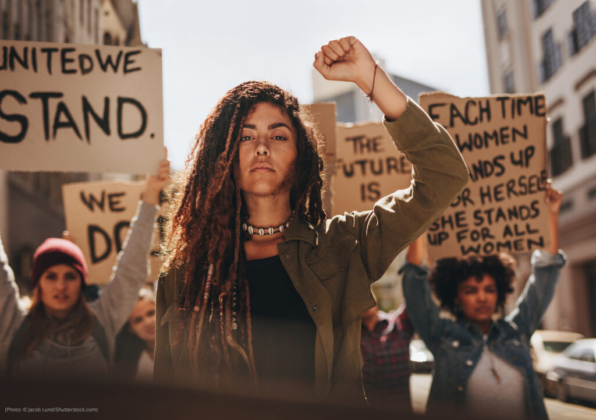

15.4%of women aged 15–49 who ever had a husband or intimate partner reported physical, sexual, or emotional violence in 2025.PSA, 2025 NDHS
GENDER-BASED VIOLENCE AND WOMEN'S SAFETY
Everyone deserves
to feel safe.
Gender-based violence affects people, families, schools, workplaces, and communities. Learn the signs, understand your rights, and know where to seek support.
11,585VAW-related cases were recorded by the PNP in 2023 across several VAW-related laws.PCW / PNP, 2023
5.3%of women aged 15–49 who ever had a husband or intimate partner reported physical violence in 2025.PSA, 2025 NDHS
911is the Philippines' nationwide emergency hotline for urgent situations.Government of the Philippines

Awareness starts with understanding.WHY THIS MATTERS
Safety builds stronger communities.
Gender-based violence refers to harmful acts directed at a person because of gender, sex, gender identity, or gender roles. Women and girls experience many forms of violence, while people of different genders also face gender-related harm.
Learning about the issue helps students and communities recognize warning signs, respect boundaries, support survivors, and understand available protections.
♙EmpowermentSupport people in making informed choices.
◇EqualityPromote equal rights and opportunities.
◎InclusionBuild spaces where people feel respected.
♧ResponsibilityTake safe, appropriate action when harm occurs.
UNDERSTAND THE ISSUE
What gender-based violence looks like
Violence is not limited to physical harm. Select a card to learn more.
RECOGNIZE THE SIGNS
Small warning signs deserve attention.
Tap a sign to see examples and a practical response.
Examples include demanding passwords, controlling who someone sees, monitoring location, or deciding what they wear. Healthy relationships respect privacy and choice.
Threats of harm, blackmail, property damage, or threats involving children are warning signs. If danger feels immediate, move to a safer place and contact emergency services.
Consent must be voluntary and ongoing. Pressure, threats, manipulation, or force do not create consent.
Repeated calls, messages, following, or monitoring after someone asks for contact to stop may signal harassment or stalking.
Trying to cut someone off from friends, family, classmates, or support services is a common control tactic.
Taking wages, blocking access to money, or preventing someone from working or studying may be economic abuse.
PRACTICAL SAFETY GUIDE
Safety in everyday spaces
Use these steps as general safety guidance. Personal situations differ, so choose actions that fit the person's circumstances.
At home
Keep trusted contacts informed when needed. Store important documents and emergency numbers in a safe place. If a situation becomes dangerous, prioritize getting to a safer location.
- Identify a trusted person or safe place.
- Keep your phone charged when possible.
- Plan an exit route for emergencies.
In public places
Stay aware of your surroundings and use well-lit routes when practical. Trust your instincts when a situation feels unsafe.
- Stay near trusted people or staffed areas.
- Share your route with someone you trust.
- Ask security or authorities for help when needed.
At school
Students have the right to learn in a safe environment. Save relevant messages or records and report harassment through appropriate school channels.
- Know your school's reporting process.
- Tell a trusted teacher, counselor, or administrator.
- Keep evidence when doing so is safe.
At work
Workplace sexual harassment is addressed by Philippine law. Follow your organization's reporting process and seek support when needed.
- Document relevant incidents and communications.
- Use your workplace's reporting channels.
- Seek appropriate assistance if you feel unsafe.
Online
Protect accounts and personal information. If harassment occurs, consider saving evidence before blocking or reporting, when safe to do so.
- Use strong, unique passwords and two-step verification.
- Review privacy settings.
- Block and report abusive accounts.
PHILIPPINE STATISTICS
Real data. Real people. Real impact.
2025 NDHSNational
15.4%
Intimate partner violence
Women aged 15–49 who ever had a husband or intimate partner and experienced physical, sexual, or emotional violence by their current or most recent partner.
View PSA source ↗2025 NDHSNational
14.0%
Emotional violence
Among women aged 15–49 who ever had a husband or intimate partner, 14.0% reported emotional violence by their current or most recent partner.
View PSA source ↗2025 NDHSNational
5.3%
Physical violence
Among women aged 15–49 who ever had a husband or intimate partner, 5.3% reported physical violence by their current or most recent partner.
View PSA source ↗2023PNP / PCW
11,585
VAW-related cases
PNP CIRAS recorded 11,585 VAW-related cases in 2023, including cases under RA 9262, RA 8353 as amended, RA 11313, RA 7877, and RA 9208 as amended.
View PCW source ↗Statistics describe specific populations and reporting systems. Reported cases do not represent every incident, and survey measures have defined populations and methods.
KNOW YOUR RIGHTS
Key Philippine laws
These summaries are for educational purposes. Read the official text for the complete provisions.
Anti-Violence Against Women and Their Children Act of 2004
Addresses violence against women and their children and provides protective measures and penalties for covered acts.
Anti-Sexual Harassment Act of 1995
Declares sexual harassment unlawful in employment, education, and training environments under the conditions covered by the Act.
Safe Spaces Act
Addresses gender-based sexual harassment in streets, public spaces, online, workplaces, and educational or training institutions.
MYTH OR FACT
Test what you know.
Choose an answer. You will see a short explanation after each question.
Question 1 of 6
MYTH OR FACT
Gender-based violence only happens inside the home.
NEED HELP?
Reach a trusted person or service.
If someone is in immediate danger, contact emergency services. For other situations, consider a trusted person, local support service, school or workplace channel, or the appropriate government office.
Philippine Commission on Women
Information and resources on women's rights, gender equality, and VAW.
Visit PCW ↗Women and Children Protection Center
PCW lists PNP Women and Children Protection Center contacts and referral information.
View verified PCW contacts ↗Department of Social Welfare and Development
DSWD provides social welfare services and referral support.
Government directory ↗♡
If a friend tells you about abuse
Listen without blaming. Believe their experience. Ask what support they want. Respect their decisions. If there is immediate danger, help them contact emergency services.
01 Listen02 Respect03 Support04 Refer
FAQ
Questions students often ask
It refers to harmful acts directed at a person because of gender, sex, gender identity, or gender roles. It includes physical, sexual, emotional, economic, and online forms.
Examples include physical violence, sexual violence, psychological abuse, economic abuse, stalking, harassment, and gender-based online sexual harassment.
Some online conduct falls within gender-based online sexual harassment under the Safe Spaces Act. The law includes unwanted sexual remarks, threats, sharing images without consent, cyberstalking, and related conduct covered by the Act.
Listen without blaming, ask what support they want, help them identify trusted people or services, and contact emergency services if there is immediate danger.
Depending on the situation, options include 911 for emergencies, a Barangay VAW Desk, local social welfare offices, PNP Women and Children Protection units, and other verified government support channels.
Equality supports equal rights, opportunities, participation, and respect. These conditions help create environments where people are better able to exercise their rights and seek support.
REFERENCES
Sources used for this project
External sources are linked so readers can verify statistics, laws, and support information.
01
Philippine Statistics AuthorityResults from the 2025 National Demographic and Health Survey, including spousal violence indicators.
↗
02Philippine Commission on Women2024 Campaign to End Violence Against Women and PNP-reported VAW-related case data.
↗
03Lawphil, Republic Act No. 9262Anti-Violence Against Women and Their Children Act of 2004.
↗
04Lawphil, Republic Act No. 7877Anti-Sexual Harassment Act of 1995.
↗
05Lawphil, Republic Act No. 11313Safe Spaces Act.
↗
06Government of the Philippines, Emergency HotlinesVerified government directory for emergency and public-service contacts.
↗